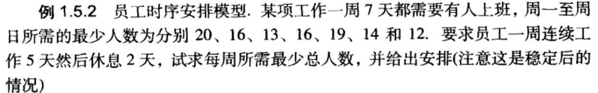

Lingo上手攻略 - Thu, Aug 27, 2020
欢迎阅读Lingo上手攻略
Lingo速上手攻略
[toc]
核心思想
lingo引入了集合（set）概念，集合是这一组相关的对象构成的组合，代表模型中的实际事物。集合的事先声明包括集合的名称、集合的要素、集合的属性，形如WH/W1..W6/:AI
多个基本集合可以通过Links(WH,VD):C,X的方式组成一个衍生集合，衍生集合如果没有指定衍生的成员，将会取所有可能的组合
lingo中数据段的定义是通过DATA: ENDDATA来实现一直变量的赋值的。
基本语法
@sum(s:e)求和函数，括号里面填写求和的集合名称（表示对这些成员进行）和表达式（表示对该表达式进行），以:做分割。如果参与运算的属性来自同一个集合，则索引符号可以省略。
@for(s:e)循环函数,括号填写同上。如果参与运算的属性来自同一个集合，则索引符号可以省略。
@size(s) 返回成员个数
@warp(I,N) 返回在I–N之间的数，(如果I$\gt$ N则返回 I-N*K , $\forall$ K)
@index(s:ek) 返回ek元素在s中的顺序号
常用功能
实例
- okay,来看一个实例


首先建立模型，$min Z=\sum\sum c_{ij} x_{ij}$于是有 $s.t. \begin{cases}\sum x_{ij}< a_i,i=1…6\ \sum_{i =1}^6 x_{ij} = d_{j}\ x_{ij}> 0\end{cases}$在lingo中求解如下
MODEL:
SETS:
WH/W1..W6/:AI;
VD/V1..V8/:DJ;
LINKS(WH,VD):C,X;
ENDSETS
DATA:
AI = 60,55,51,43,41,52;
DJ = 35,37,22,32,41,32,43,28;
C = 6,2,6,7,4,2,5,9
4,9,5,3,8,5,8,2
5,2,1,9,7,4,3,3
7,6,7,3,9,2,7,1
2,3,9,5,7,2,6,5
5,5,2,2,8,1,4,3;
ENDDATA
MIN=@SUM(LINKS(I,J):C(I,J)*X(I,J)); ！@SUM(LINKS:C*X);
@FOR(WH(I):@SUM(VD(J):X(I,J))<=AI(I));
@FOR(VD(J):@SUM(WH(I):X(I,J))= DJ(J));
END

周一到周日安排x(i)个人上班，周一上班的人周六周日肯定在休息，以此类推，即周一除了周二和周三开始上班的人都在上班…
设总人数为Z，可以得到周一上班的人数为：Z - x(2) - x(3)，应该满足Z -x(2) - x(3)$\ge$ R(1)，以此类推…
可以得到模型如下 $$ min Z = \sum _i^7x_i $$
$$ s.t.\ Z - x(i+1)-x(i+2)\ge R(i), i = 1,2,3,4,5,6,7 $$
在 i = 6时，上式应该将i+2变为1，i = 7时则分别变为1，2…
通过@warp(i+1,7)和@warp(i+2,7) 可以实现这样的转化，在lingo中约束条件可以写成
Z - x(@warp(i+1,7)) - x(@warp(i+2,7))
对应的lingo代码:
MODEL:
SETS:
DAYS/MON..SUN/:R,X;
ENDSETS
DATA:
R = 20 16 13 16 19 14 12;
ENDDATA
MIN = Z;
N = @SIZE(DAYS:X);
Z = @SUM(DAYS(I):Z-X(@wrap(I+1,n)-X(@WARP(I+2,N)> = R(I))));
END